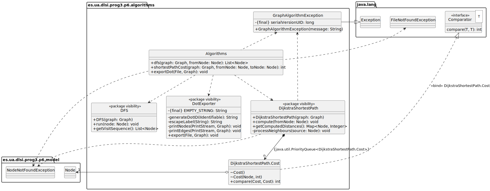

Programación 3
Universidad de Alicante, 2024–2025
Práctica 6
| Peso relativo de está práctica en la nota de prácticas: 15% |
Genericidad y reflexión
En esta práctica se trabajará la genericidad en Java a través de las actividades que se describen a continuación. También haremos uso de algunos mecamismos de reflexión de Java.
En
este enlace se proporciona un proyecto Eclipse con la implementación
de una clase grafo (Graph), detallada en el UML adjunto,
que sólo es capaz de contener cadenas tanto en los nodos como en las
aristas. Se incluyen también una serie de algoritmos que usan el grafo
cuyas referencias al grafo se deberán actualizar debidamente. El
proyecto contiene una lista de pruebas unitarias adecuadas para
comprobar el funcionamiento de cada clase. Actualmente el proyecto tiene
errores de compilación a falta de que realices las tareas que indicamos
en este enunciado.
(Si necesitas recordar qué es un grafo, aquí tienes una mini-introducción)
¿Qué tengo que hacer?
Tu trabajo en esta práctica consiste en pasar un modelo realizado sin genericidad a otro más adecuado que sí la use. También se añadirá código basado en reflexión de Java para realizar unas operaciones que de otra forma no se podrían abordar.
Una vez hayas entendido la construcción orientada a objetos del modelo y los algoritmos que describimos a continuación, debes seguir los pasos descritos en Tareas a realizar.
Modelo
Un grafo (Graph) está compuesto por un conjunto de nodos
(Node) y aristas (Edge). Los nodos son objetos
que tienen un identificador numérico y contienen algo (en el UML, una
cadena) y las aristas conectan nodos entre sí, de manera que podemos
‘recorrer’ los nodos del grafo atravesando aristas. Una arista tiene
siempre un nodo de partida y otro de llegada (son unidireccionales). Los
nodos pueden o no tener aristas entrantes y/o salientes. Las aristas
también tienen un identificador númerico y un contenido (en el UML
anterior, una cadena).
La etiqueta {unique} que ves en la relación entre
Graph y Node o Edge indica que un
grafo sólo puede contener el mismo nodo o arista una vez. Para eso la
relación se debe implementar como un conjunto
(Set<T>) de nodos/aristas. A diferencia de una lista
(List<T>), un conjunto no pueden contener elementos
duplicados. Estudia la parte dedicada a los Set
en nuestra web, para saber cómo usarlos (son muy parecidos a las
listas).
Para poder usar adecuadamente los conjuntos (Set) es
necesario poder distinguir de manera unívoca los nodos y las aristas.
Para ello se ha añadido un identificador único a cada uno mediante la
clase singleton IDGenerator (una clase
singleton es aquella de la que sólo tenemos una instancia en
toda la aplicación – puedes ver el código fuente para comprobar cómo
conseguimos implementar esa restricción). Para unificar la funcionalidad
de mantener un identificador único así como una etiqueta, tanto
Node como Edge heredan de la clase abstracta
GraphObject que implementa la interfaz
IIdentifiable. En este diseño de partida, todas las
etiquetas son de tipo cadena.
Los nodos no saben con qué aristas se relacionan. El grafo sí dispone de esa información. En cambio las aristas sí conocen sus nodos origen y destino.
En una aplicación que utilice la librería podemos tener instanciados
varios grafos. En los métodos de Graph que reciben como
parámetro un nodo se comprueba que éste pertenece al grafo al que se
invoca, lanzando NodeNotFoundException en caso de que no
pertenezca.
Los nombres y signaturas de cada método mostrado en el UML son suficientemente descriptivos como para entender su significado. No los describimos con más detalle porque no es necesario para realizar la práctica. En cualquier caso, la documentación javadoc incluida en el código fuente contiene suficiente información para quien la quiera consultar.
Algoritmos

Se han creado una serie de algoritmos que utilizan el modelo
anteriormente expuesto. La clase Algorithms centraliza el
acceso a los distintos algoritmos. Por ello, cada algoritmo está
definido con visibilidad de paquete. Puedes ver que hay elementos no
optimizados en esa clase.
DotExporter
Dentro de los algoritmos, la clase DotExporter es capaz
de exportar el grafo en formato DOT para GraphViz. Hay multitud de visores de
este formato en la web, por ejemplo éste.
En DotExporter se usan las clases File
como referencia a un fichero en disco, y PrintStream
como abstracción que encapsula el comportamiento de escribir distintos
tipos de datos como char, String,
int, etc. en archivos.
Como la exportación es a fichero, para entender mejor el código de esta clase puedes consultar esta introducción al sistema de entrada/salida de Java, también accesible desde la página principal de la asignatura.
La clase DFS recorre el grafo a partir de un nodo dado
usando el algoritmo
DFS, retornando la secuencia de visita de nodos como copia
profunda para respetar la composición entre Graph y
Node.
Finalmente, la clase DijkstraShortestPath realiza el
cálculo del camino más corto desde un nodo dado al resto de nodos del
grafo con el método compute,utilizando el algoritmo de
Dijkstra. Luego podemos invocar a
getComputedDistances pasándole como parámetro ese nodo.
DijkstraShortestPath se apoya en la clase interna
DijkstraShortestPath.Cost para poder comparar pesos en el
cálculos de las distancias entre nodos. El problema que tenemos es que
esos pesos están almacenados en las aristas con un tipo de dato cadena.
En la implementación que proporcionamos, en el método
DijkstraShortestPath.processNeighbours(), líneas
157-158, se realiza una conversión de tipo cadena a entero para
realizar los cálculos, lo que no es lo más recomendable y más adelante
solucionaremos:
int edgeDistance = Integer.parseInt(edge.getLabel());
int newDistance = dist.get(source) + edgeDistance;Nota: no podemos comparar directamente las cadenas porque se haría una comparación lexicográfica y “9” se compararía como menor que “10”.
Aplicación de la librería: mapa de red
Como aplicación de la librería hemos creado una representación en grafo de un mapa de red muy sencillo con el cálculo simple de latencias de red basado en el camino más corto entre nodos del grafo.
El problema que tenemos con la representación actual del grafo de
nuestra librería es que al almacenar sólo cadenas nos es difícil guardar
adecuadamente los dispositivos (Device) como nodos del
grafo porque perdemos información.
Por ello, deberás añadir genericidad al grafo para que admita cualquier tipo de dato tanto en las etiquetas como en los nodos. La implementación completa (que no debes modificar) de este mapa de red que se proporciona en el proyecto base de Eclipse ya usa el resultado de esa conversión del grafo a tipos genéricos, por lo que no compilará hasta que añadas correctamente la genericidad.
Tareas a realizar
Deberás modificar el código para realizar la práctica sobre el proyecto que proporcionamos. Éste ya contiene el código del mapa de red anteriomente descrito y pruebas unitarias que deberán funcionar una vez acabes de realizar todas las tareas que describimos a continuación.
Introducción de genericidad
Para ampliar las posibilidades de esta pequeña librería de grafos,
evitar soluciones como la conversión de tipo cadena a entero usada en la
clase DijkstraShortestPath que hemos explicado
anteriormente, y permitir la aplicación sobre un mapa de red también
descrita arriba, se nos pide que modifiquemos el grafo para que pueda
contener cualquier tipo de dato como etiqueta, tanto en los nodos como
en las aristas, pudiendo ser un tipo para los nodos y otro distinto para
las aristas.
No mostramos nuevos diagramas de clases sino que indicamos uno a uno los pasos que debes realizar y que deberás entender para poder acabar de realizar la práctica. Ten en cuenta que si no eres capaz de entender los cambios que tienes que realizar, es posible que la práctica no te compile en absoluto.
Fíjate en el paquete es.ua.dlsi.prog3.p6.network y en el
test GraphTests.java. Verás como Graph recibe dos
argumentos de tipo, uno para la etiqueta de los nodos y otro para la de
las aristas. Parametriza Graph, GraphObject,
Node y Edge para convertirlas en clases
genéricas donde el tipo de la etiqueta pasa a ser genérico, de manera
que el código del paquete network funcione. Usa como
nombres para los parámetros de tipo LabelType, o
NodeLabelType y EdgeLabelType cuando sea
necesario distinguir entre etiquetas de nodo y de arista. Ten en cuenta
que, al igual que Graph, Edge tendrá dos
parámetros de tipo: uno para la etiqueta de los nodos y otro para la
etiqueta de la arista que los conecta.
En el código de Graph ya usamos tipos genéricos para
declarar referencias a tipos genéricos definidos en
java.util, como Map o Set.
Deberás parametrizar los nodos y aristas adecuadamente.
NodeNotFoundException
Al implementar esta clase nos encontramos con el problema de que, al
ser una excepción, no puede ser genérica. Por ello, sólo podemos usar
Node como Node<?>, que permite cualquier
tipo. Para el uso que se le da a la clase es más que suficiente.
Tras introducir correctamente la genericidad, los test en GraphTest.java deberían compilar y funcionar correctamente.
Algoritmos
DFS y DotExporter
Para parametrizar las clases DFS y
DotExporter repetiremos exactamente el mismo proceso que
hemos realizado para introducir la genericidad en el grafo. Así, la
clases quedarán definidas como
DFS<NodeLabelType, EdgeLabelType> y
DotExporter<NodeLabelType, EdgeLabelType>.
DijkstraShortestPath
El cálculo del camino más corto requiere de la operación de suma y
comparación entre los pesos de las aristas. En la implementación basada
en cadenas esto lo realizábamos convirtiendo la etiqueta cadena de la
arista en numérica y usando los operadores de comparación y suma nativos
(<, +, …). Sin embargo, si ahora queremos
poder operar con cualquier tipo de dato en la etiqueta debemos
proporcionar una forma para realizar esa operación.
Necesitamos realizar dos acciones. La primera es obligar a que el
tipo de la etiqueta de la arista sea comparable, es decir, implemente la
interfaz Comparable.
La segunda es crear un mecanismo para poder operar con los pesos de
las aristas, sea cual sea su tipo de dato. Esto lo conseguimos con la
introducción de una interfaz genérica ICostOperators que
mostramos en el diagrama y que deberás programar. Esta interfaz define
tres operaciones genéricas sobre el tipo T: la suma, el
valor cero y el valor máximo. Fíjate como en el test
DijkstraShortestPathTest.java se implementa esta interfaz
mediante una clase anónima.
Además, es necesario añadir como parámetro una referencia de esta
clase al constructor de DijkstraShortestPath y almacenarla
como atributo:
class DijkstraShortestPath<NodeLabelType, EdgeLabelType extends Comparable<EdgeLabelType>> {
...
private ICostOperators<EdgeLabelType> costOperators;
...
public DijkstraShortestPath(Graph<NodeLabelType, EdgeLabelType> graph, ICostOperators<EdgeLabelType> costOperators) {
this.graph = graph;
this.costOperators = costOperators;
}
...Ahora, las distancias desde nodos almacenadas en la propiedad
dist no tienen por qué ser Integer, sino que
son del tipo parametrizado de las aristas EdgeLabelType,
que sabemos que son comparables. El atributo de coste de la clase
interna Cost será ahora también de tipo
EdgeLabelType.
Como ya no sabemos cuáles son los valores cero y máximo del peso
coste de una arista, ya que éstos dependen del tipo de dato, usaremos
los métodos zero() y maximumValue() de
ICostOperators. En el método compute(),
utiliza estos métodos donde sea necesario conocer el valor máximo y el
valor cero del coste de una arista.
En este código usamos la clase PriorityQueue
de Java
Collections Frameworks. Una cola de prioridad es una cola en la
que los elementos se encolan ordenados según una prioridad, por
lo que necesita que le proporcionemos un método de ordenación. Para ello
empleamos la interfaz Comparator. Puedes ver como se usa en
nuestra Guía
fácil de Java Collection Framework.
Finalmente, en el código del método processNeighbours(),
que suma y compara distancias, deberemos sustituir la conversión de
cadena a entero que teníamos, así como sustituir las sumas y las
comparaciones directas con los operadores enteros + y
< por el uso de ICostOperators.add() y
Comparable.compareTo(). En concreto, deberás sustituir:
// If new distance is cheaper in cost
int edgeDistance = Integer.parseInt(edge.getLabel());
int newDistance = dist.get(source) + edgeDistance;
// If new distance is cheaper in cost
if (newDistance < dist.get(target)) {por
// If new distance is cheaper in cost
EdgeLabelType edgeDistance = edge.getLabel();
EdgeLabelType newDistance = costOperators.add(dist.get(source), edgeDistance);
// If new distance is cheaper in cost
if (newDistance.compareTo(dist.get(target)) < 0) {Algorithms
En el código anterior de los grafos con cadenas, los métodos
estáticos de la clase Algorithms usaban tipos no
parametrizados. Sin embargo, ahora todas las clases del grafo lo son,
por lo que debes parametrizar los métodos estáticos de
Algorithms para que compilen y funcionen correctamente con
las clases genéricas. Ojo, no hay que parametrizar la clase
Algorithms, sino sus métodos estáticos.
Ten en cuenta que para parametrizar shortestPathCost()
el tipo de la arista debe implementar la interfaz
Comparable. Además, la signatura del método cambia de la
siguiente forma:
- devuelve
EdgeLabelType(recuerda: este es el tipo de dato que define el ‘coste’ de una arista) - debemos añadirle un cuarto argumento de tipo
ICostOperators<EdgeLabelType>que luego pasaremos al constructor deDijkstraShortestPath.
Aplicación mapa de red
En el código que hemos proporcionado en la clases
Network y NetworkTest vemos que no podemos
realizar la llamada a printLatencyMap() por el borrado de
tipos de Java:
public class Network {
...
public void printLatencyMap(List<Device> devices) {
...
}
...
public static final void main(String [] args) {
Network network = new Network();
Computer c1 = new Computer(.....);
...
List<Computer> computers = Arrays.asList(c1, c2);
network.printLatencyMap(computers); // Error de compilaciónPara solucionarlo debes usar un comodín para tipos genéricos en los
métodos printLatencyMap y computeLatencyMap.
En lugar de List<Device>, para que admita cualquier
tipo que herede de Device deberás usar
List<? extends Device>.
Cuando esté listo, ejecuta Network.main() o
NetworkTest.java para ver que todo funciona.
Uso de la reflexión en Java
La última parte de la práctica consiste en que utilicemos el mecamismo de la reflexión en Java.
Para ello hemos creado una serie de clases descritas en el siguiente UML.
La clase Code2Graph construye un grafo
Graph que muestra las dependencias entre clases. Para ello
se apoya en una serie de clases que usan reflexión. Aunque en las
pruebas unitarias se evalúa si todo funciona, puedes usar el
main de esa clase si quieres experimentar con ella.
La tarea que deberás realizar es la de implementar las clases
ClassAnalyzer y ReflectionUtils del paquete
es.ua.dlsi.prog3.p6.reflection.impl que te damos
vacías.
Damos pistas a continuación de cómo implementarlas mediante el uso de la reflexión de Java.
ClassAnalyzer
findDependantClasses: Este método se da ya implementado. Puede servirte de guía a la hora de usar la reflexión. Recorre los constructores (getConstructors()) y métodos (getDeclaredMethods()) de la clase y devuelve las clases de sus parámetros (getParameterTypes()) y tipos de retorno (getReturnType()).findParentClass: devuelve la superclase de la clase dada, onullsi ésta no tiene superclase.haveSamePackage: evalúa si dos clases pertenecen al mismo paquete.findAssociatedClasses: devuelve un conjunto con las clases a las que pertenecen los atributos definidos en la clase (getDeclaredFields()). Usa el métodoField.getType()para obtener el tipo del atributo.
ReflectionUtils
instantiate: crea una nueva instancia de la clase. Dado que no se le pasa parámetros al constructor podemos usar el métodonewInstance()de la clase. Fíjate cómo hemos parametrizado el método con<T>para que el código cliente de este método no necesite hacer ninguna conversión de tipo (instantiate()sí tendrá que hacer conversión de tipo(T)).findClassInPackage: compondrá el nombre cualificado de la clase concatenando el paquete y el nombre de la clase, interponiendo un punto (“.”), y usará el métodoforName()deClass.isImplementingInterface: para saber si una clase implementa un interfaz la forma más sencilla es preguntar si podemos asignar esa clase al interfaz (véaseisAssignableFrom()enClass).
Puedes ver cómo usamos estas dos clases en el código de
Code2Graph. Por ejemplo, es interesante que compruebes cómo
la propiedad IClassAnalyzer classAnalyzer de esta clase no
se crea a través de una cláusula new, sino que se usa
reflexión para localizar la clase en un paquete que proporcionamos en
forma de cadena (véase método createGraph).
Documentación
No es necesario documentar esta práctica
Puedes documentar el código que escribas, de hecho te lo recomendamos, pero no se evaluará.
Requisitos mínimos para evaluar la práctica
- La práctica debe poder ejecutarse sin errores de compilación.
- Ninguna operación debe emitir ningún tipo de comentario o mensaje por salida estándar, a menos que se indique lo contrario. Evita también los mensajes por la salida de error.
- Se debe respetar de manera estricta el formato del nombre de todas las propiedades de las clases, tanto en cuanto a ámbito de visibilidad como en cuanto a tipo y forma de escritura. En particular se debe respetar escrupulosamente la distinción entre atributos de clase y de instancia, así como las mayúsculas y minúsculas en los identificadores.
Entrega de la práctica
La práctica se entrega durante el control en el servidor de prácticas del DLSI.
Debes subir allí un archivo comprimido con tu código fuente (sólo archivos .java). En un terminal, sitúate en el directorio ‘src’ de tu proyecto Eclipse e introduce la orden
tar czvf prog3-p6.tgz *
Esto comprimirá todo el código que hay en src/, incluyendo el de aquellas clases que ya se daban implementadas. Esto es correcto y debes entregarlo así.
Sube este fichero prog3-p6.tgz al servidor de prácticas.
Sigue las instrucciones de la página para entrar como usuario y subir tu
trabajo.
Evaluación
La corrección de la práctica es automática. Esto significa que se deben respetar estrictamente los formatos de entrada y salida especificados en los enunciados, así como la interfaz pública de las clases, tanto en la signatura de los métodos (nombre del método, número, tipo y orden de los argumentos de entrada y el tipo devuelto) como en el funcionamiento de éstos. Así, por ejemplo, el método Clase(int,int) debe tener exactamente dos argumentos de tipo int.
Tienes más información sobre el sistema de evaluación de prácticas en la ficha de la asignatura.
Además de la corrección automática, se va a utilizar una aplicación detectora de plagios.
Se indica a continuación la normativa aplicable de la Escuela Politécnica Superior de la Universidad de Alicante en caso de plagio:
“Los trabajos teórico/prácticos realizados han de ser originales. La detección de copia o plagio supondrá la calificación de”0” en la prueba correspondiente. Se informará la dirección de Departamento y de la EPS sobre esta incidencia. La reiteración en la conducta en esta u otra asignatura conllevará la notificación al vicerrectorado correspondiente de las faltas cometidas para que estudien el caso y sancionen según la legislación vigente”.

{kind=link}
{kind=link}